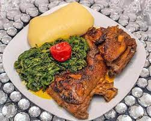

Kati Kati

About this recipe
Kati Kati is a traditional meal for the people in the North West region of
of Cameroon. It is a complete dish which comprise of corn fufu, vegetables(jama jama)
and roasted chicken fried and seasoned with red oil (kati kati).
This meal is very special to most cameroonians especially those from the North West region of Cameroon, reason why it is part of every important
occassion for the North West people commonly called Bamenda people by people from
other parts of the country..
Ingredients
- vegetables
- red oil
- pepper
- salt
- cubes
- chicken
- corn powder
Steps
- The vegetables are fixed washed and drained
- the vegetables are then paced inside the pot, pepper adder and both are cooked to taste
- Oil is then added to the vegetables as desired, allowed to steam for a while and then removed.
- The chicken is then roasted until is ready and appear seemingly burned to provide that unique taste
- The roasted chicken is then chopped into sizes as desired and placed inside the pot.
- oil, sait, cubes are then added to the chopped chicken and allowed to steam for about 15 minutes
- Next for our corn fufu, add water into a pot and allow to boil.
- some of the corn powder is mixed in a bowl with cold water and added to the pot containing the boiled water
- The mixture is well stirred and allow to boil for about 15 minutes
- The remaining corn powder is then added to the boiled mixture to get a thick viscous mixture as desired
- It is allowed to steam for about s minutes and then served..